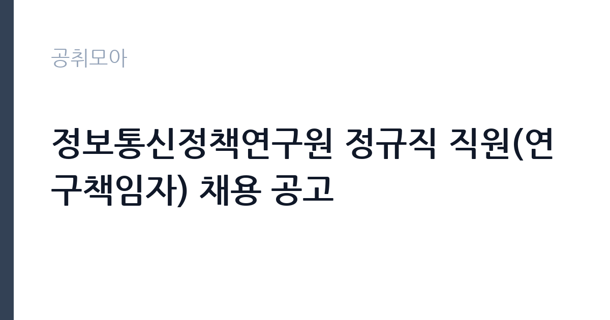

[공공기관] 정보통신정책연구원 정규직 직원(연구책임자) 채용 공고
정보통신정책연구원 · 충북 · 마감 2026-11-30 (D-29) · 출처 잡알리오

한눈에 보는 모집 조건
| 기관 | 정보통신정책연구원 |
|---|---|
| 공고명 | 정보통신정책연구원 정규직 직원(연구책임자) 채용 공고 |
| 고용형태 | 정규직 |
| 근무지 | 충북 |
| 게시일 | 2026-11-01 |
| 마감일 | 2026-11-30 (D-29) |
지원자격, 이렇게 읽으세요
- 공공기관 채용공시
- 세부 조건은 원문 공고문 확인
응시자격의 핵심은 학위와 전공 두 가지입니다. 경제학 또는 관련 분야 박사학위 소지자여야 하고, 2027년 8월까지 박사학위를 취득할 예정인 예정자도 지원할 수 있습니다. 여기에 한국어 능통이 필수 조건으로 명시되어 있습니다. 영어로 논문을 쓰는 연구직이지만 정책보고서와 내부회의는 한국어로 진행되기 때문에, 해외에서 학위를 마친 지원자라면 이 조건을 가볍게 보면 안 됩니다. 결격사유는 국가공무원법 제33조 각 호, 병역의무 기피 사실, 연구원 징계로 면직된 날부터 3년이 지나지 않은 경우, 공공기관 부정채용으로 채용이 취소된 날부터 5년이 지나지 않은 경우입니다. 접수 서류는 온라인 지원 시 이력서(CV), 발표할 논문 1편, 최종학교 성적증명서(비공식본 허용), 추천서 3통입니다.
이 공고의 포인트
이 공고의 가장 큰 특징은 채용 규모입니다. 연구책임자 4명을 한 번에 뽑는 것은 국책연구기관 연구직 공고에서는 드문 규모입니다. 두 번째는 전형에 발표세미나가 포함된다는 점입니다. 서류와 면접만으로 끝나는 일반 공채와 달리, 3차에서 논문의 우수성과 발표역량, 정책연구 적합성, 조직기여 잠재력을 함께 봅니다. 연구자에게는 부담이지만 논문 하나로 승부를 볼 수 있는 구조이기도 합니다. 세 번째는 우대 가점입니다. 등록장애인은 총점의 5퍼센트, 대전·세종·충북·충남 소재 대학에서 학사학위를 취득한 지역인재는 득점의 3퍼센트 이내 가점을 받습니다. 다만 두 가점이 겹치면 상위 1개만 적용됩니다.
전형은 어떻게 진행되나
1차 서류전형은 논문의 우수성 및 적합성 30점, 연구분야 전문성 30점, 인적성 등 종합평가 40점으로 100점을 구성하고 10배수 내외를 선발합니다. 2차 면접전형은 전문지식과 응용능력, 의사발표의 정확성과 논리성, 품행 및 성실성, 창의력·의지력·발전가능성, 사물을 보는 태도 각 20점씩 100점으로 5배수 내외를 남깁니다. 3차 발표세미나는 면접 합격자를 대상으로 논문의 우수성, 발표역량과 의사소통 능력, 정책연구 적합성, 조직기여 잠재력을 종합평가합니다. 공고문은 2027년 1월에 화상 플랫폼으로 면접을 진행한다고 안내하고 있습니다.
원문에서 확인한 전형 방식
1. 전공분야 : 경제학 분야 2. 응시자격 : 해당분야 박사학위 소지자, 또는 ’27년 8월 이내 박사학위 취득 예정자, 결격사유에 해당하지 않는 자
이런 분께 추천해요
- 경제학 박사 학위를 마쳤거나 2027년 8월 취득을 앞둔 분. 예정자도 지원할 수 있어 졸업을 앞둔 박사과정생에게 실질적인 기회입니다.
- 정보통신·방송·미디어 산업의 정책 연구를 논문으로 쌓아온 분. 공고문은 미디어·통신 정책, 공정경쟁과 규제, ICT 산업 분석·전망, 사회적 영향력을 연구 분야로 제시합니다.
- 대전·세종·충북·충남 소재 대학에서 학사학위를 받은 지역인재. 득점의 3퍼센트 이내 가점이 적용됩니다.
지원 전 체크리스트
- 박사학위 취득 시점이 2027년 8월 이전인지 확인했는가. 예정자는 재학증명서와 취득 예정 확인서를 준비해야 합니다.
- 한국어 능통 조건을 충족하는지 점검했는가. 해외 학위자는 연구·강의 경력으로 이를 증명할 자료를 함께 준비하는 편이 안전합니다.
- 추천서 3통을 확보했는가. JOE 시스템에서 추천인이 직접 업로드하는 방식이므로 마감 직전에 요청하면 누락되기 쉽습니다.
- 발표할 논문 1편을 정했는가. 3차 발표세미나 평가항목에 논문 우수성과 발표역량이 모두 들어 있습니다.
모집 일정과 제출 타이밍
접수는 2026년 11월 1일 일요일부터 11월 30일 월요일까지입니다. 미국경제학회 JOE 시스템을 통한 온라인 접수만 인정하며, 이메일이나 우편 접수는 받지 않습니다. 공고문이 제시한 일정은 접수 마감 후 서류전형, 면접전형, 발표세미나 순으로 이어지고 2027년 1월에 화상면접이 진행되는 흐름입니다. 각 단계 합격자 발표일은 공고문에 날짜로 못 박혀 있지 않으므로 지원 후에는 KISDI 채용 게시판을 주기적으로 확인해야 합니다. 문의는 채용 담당 이메일과 전화로 받습니다.
직무 이해하기: 공공기관
정보통신정책연구원은 방송·통신·ICT 분야의 정책을 연구하는 국책연구기관으로 충청북도 진천군 덕산읍에 본원이 있습니다. 연구책임자는 연구과제를 기획하고 수행하는 중간 관리자급 연구자입니다. 실제 업무는 미디어·통신 정책 대안 마련, 공정경쟁과 규제 체계 분석, ICT 산업 규모와 전망 추정, 그리고 이런 변화가 사회에 미치는 영향 연구로 나뉩니다. 정부 부처의 정책 수립을 뒷받침하는 보고서를 쓰고, 필요하면 대외 발표와 학술 활동도 병행합니다. 대학원 연구실과 다른 점은 연구 결과가 논문으로만 끝나지 않고 정책 문서로 이어진다는 것입니다.
자기소개서 작성 팁
이 공고의 서류전형은 논문이 30점, 연구분야 전문성 30점, 인적성 등 종합평가 40점으로 구성됩니다. 자기소개서는 논문 목록을 반복하는 자리가 아니라 연구의 방향을 설명하는 자리로 쓰는 편이 낫습니다. 첫 문단에서는 제출 논문이 어떤 정책 질문에서 출발했는지 한 문장으로 밝히십시오. 두 번째 문단에서는 그 연구를 KISDI의 네 가지 연구 축 가운데 어디에 연결할 수 있는지 구체적으로 적으십시오. 통신 요금 규제, 플랫폼 공정경쟁, ICT 산업 전망 가운데 하나를 골라 정책적 함의를 쓰면 평가자가 판단하기 쉬워집니다. 세 번째로는 향후 3년간 수행하고 싶은 연구과제를 두 개 정도 제시하십시오. 데이터 확보 방법과 분석 설계까지 적으면 연구역량이 드러납니다.
면접 준비 포인트
2차 면접은 다섯 항목 각 20점으로 구성되어 전문지식과 응용능력, 논리성, 품행, 창의력, 태도를 고르게 봅니다. 질문은 제출 논문에서 시작할 가능성이 높습니다. 식별 전략의 한계, 대안 데이터, 결과의 정책적 해석을 순서대로 준비하십시오. 이어서 정책연구 경험이나 정부 과제 참여 이력이 있으면 구체적 역할로 답해야 합니다. 모르는 것은 모른다고 말하고 확인 방법을 제시하는 편이 억지 답변보다 낫습니다. 3차 발표세미나는 논문 하나를 놓고 평가위원과 토론하는 자리이므로, 예상 반론 세 가지를 미리 정리해 두면 도움이 됩니다.
급여·근무조건 읽는 법
공고문에는 보수 금액이 명시되어 있지 않습니다. 대신 알리오 경영공시로 기관 전체 수준을 가늠할 수 있습니다. 알리오 2025년 결산 공시 기준 정보통신정책연구원의 일반정규직 1인당 평균보수액은 9,525만원, 신입사원 초임은 4,963만원, 무기계약직 평균보수액은 4,533만원입니다. 평균보수액은 기본급에 고정수당, 성과상여금, 급여성 복리후생비를 모두 합산한 값이라 매달 통장에 들어오는 기본급과는 차이가 큽니다. 이번 공고는 경력과 논문 실적을 반영해 호봉과 직급을 정하는 연구직 채용이므로, 신입 초임보다는 경력 인정 결과에 따라 보수가 결정됩니다. 기본급과 수당, 상여를 구분한 실제 금액은 원문 공고문의 처우 항목과 입사 협의 과정에서 확인해야 합니다.
자주 묻는 질문
- 2027년 8월에 박사학위를 받을 예정인데 지금 지원할 수 있나요?
지원할 수 있습니다. 공고문은 해당 분야 박사학위 소지자 또는 2027년 8월 이내 박사학위 취득 예정자를 응시자격으로 명시하고 있습니다. 다만 재학 상태와 취득 예정 시점을 증명할 서류를 준비해야 합니다. - 접수는 어디로 해야 하나요?
미국경제학회 JOE 온라인 시스템으로만 접수합니다. 이력서, 발표할 논문 1편, 최종학교 성적증명서, 추천서 3통을 해당 시스템에 제출하며, KISDI 홈페이지나 이메일 접수는 안내되어 있지 않습니다. - 면접은 어떻게 진행되나요?
공고문은 2027년 1월에 온라인 화상 플랫폼으로 면접을 진행한다고 안내하고 있습니다. 이후 발표세미나 단계가 별도로 있으며, 각 단계 합격자에게 개별 통보하는 방식입니다.
함께 보면 좋은 공고
[공공기관] 대한적십자사 인천사할린동포복지회관 직원(요양보호사) 채용 공고 — 마감 2026-11-17[공공기관] 건설분야 기간제 근로자 채용공고 [HVDC건설본부] — 마감 2026-11-16[공공기관] 대한적십자사 인천사할린동포복지회관 직원(요양보호사) 채용 공고 — 마감 2026-11-17출처: 잡알리오 공개정보를 바탕으로 공취모아가 정리한 안내글입니다. 모집 조건·일정은 변경될 수 있으니 지원 전 반드시 원문 공고문을 확인하세요. 본 글은 정보 제공용이며 합격을 보장하지 않습니다.